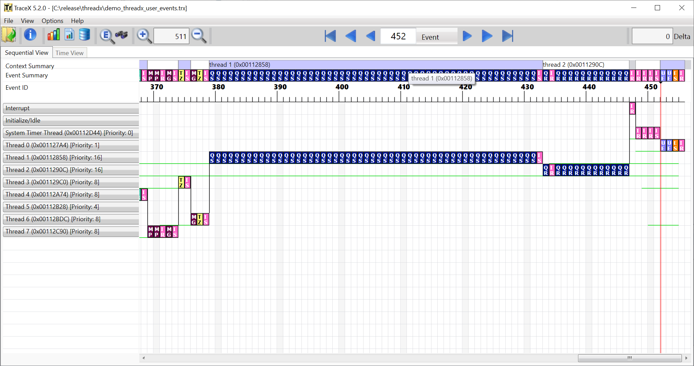
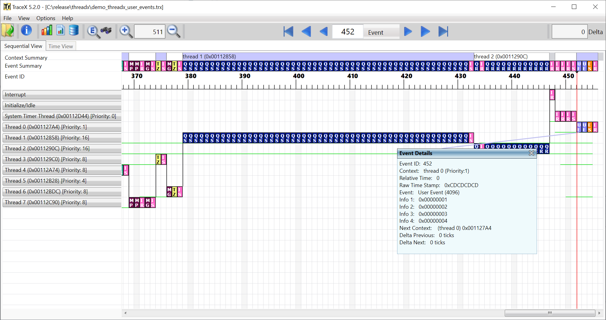
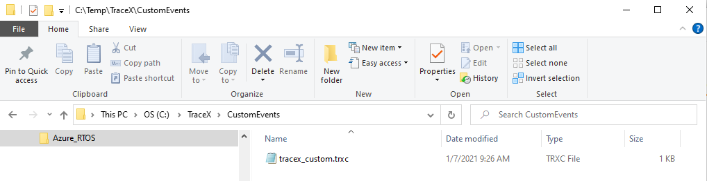
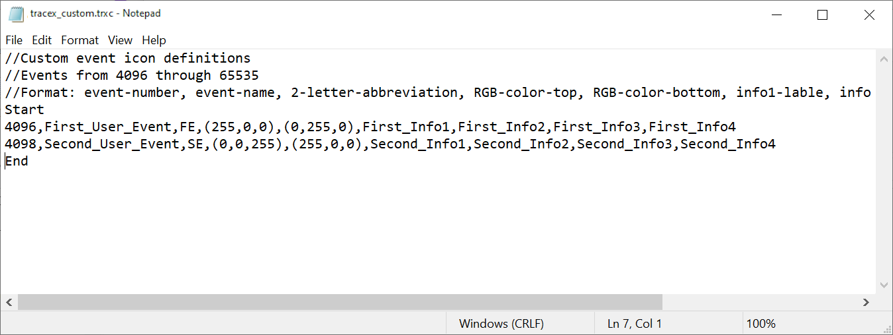
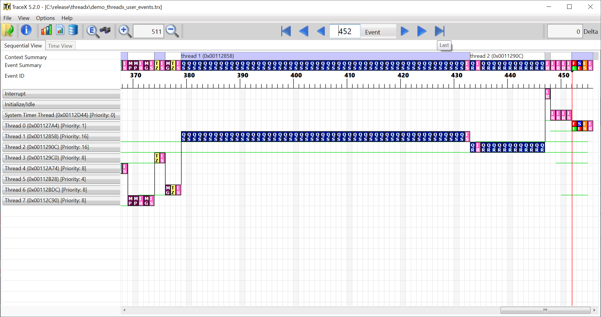
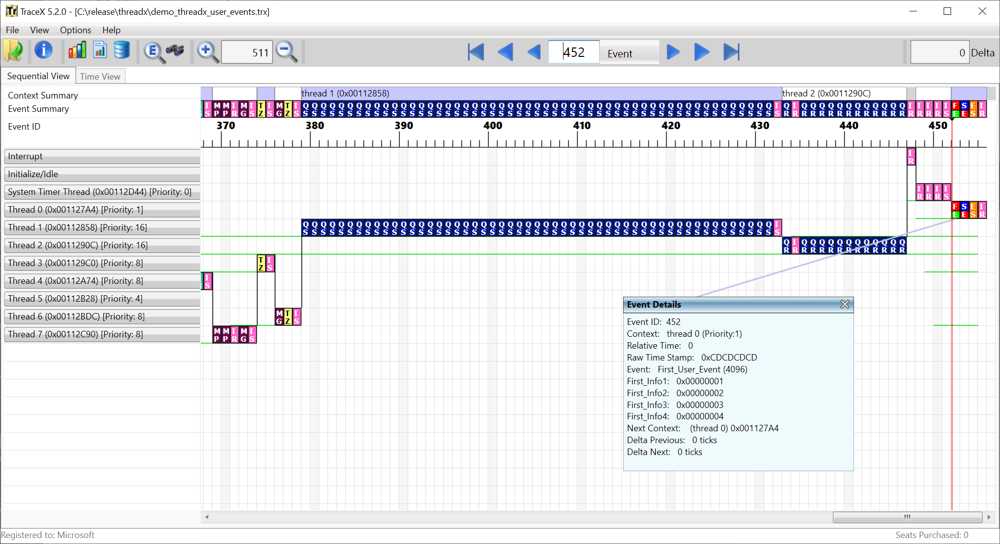

Chapter 10 - Customer user events
This chapter contains a description of how to create user-defined events and custom icons and information fields for such events. This chapter includes the following sections:
Inserting User-Defined Events
ThreadX provides the ability for developers to log their own user-defined events, providing even more useful information that can be viewed graphically by TraceX. User-defined event numbers range from
TX_TRACE_USER_EVENT_START (4096) through TX_TRACE_USER_EVENT_END (65535), inclusive. The placement of the events in the trace buffer is done via the tx_trace_user_event_insert, defined in Chapter 5. The following example calls insert two user-defined events into the current trace buffer on the target, namely user-defined event 4096 and event 4098:
tx_trace_user_event_insert(4096, 1, 2, 3, 4);
tx_trace_user_event_insert(4098,0x100,0x200,0x300,0x400);Default Display of User-Defined Events
By default, TraceX displays all user events with a default user-defined Event icon as described in Chapter 6. Figure 28 shows the default user-defined event icon for events 452 and 453, which were placed in the event buffer via the previous tx_trace_user_event_insert examples.

Detailed information is also available for user-defined Events. Figure 28 shows the detailed event information for event 452, which has event number 4096 and shows the specified four information fields.

Defining Custom User-Defined Event Icons
TraceX also provides the user the ability to create custom user-defined event icons and custom information field labels. This capability is achieved by adding event icon specifications to the tracex_custom.trxc configuration file. This file is located in the CustomEvents subdirectory of your user-defined TraceX installation directory. An example directory path is shown in Figure 30.

The tracex_custom.trxc custom event configuration file is a simple ASCII text file containing zero or more custom event definitions. The format of the file is as follows:
//Comments
**Start **
[custom event definition(s)] **End **Each line between Start and End is used to define a single custom event. TraceX provides a template version of this file with no custom events defined (nothing between the "Start" and "End" labels). The format of a custom event definition is as follows:
number, name, abbreviation, top_color, bottom_color, label1, label2, label2, label4
where:
-
number: Defines the user-defined event number, between 4096 and 65535, inclusive.</th>
-
name: Defines the logical name for the user-defined event.</td>
-
abbreviation: Defines the two-letter user-defined event abbreviation.</td>
-
top_color: Defines the RGB value for the top-half of the icon, which is a three-digit number in parenthesis. Some typical RGB definitions are
-
BLACK = (0,0,0)
-
WHITE = (255,255,255)
-
RED = (255,0,0)
-
GREEN = (0,255,0)
-
BLUE = (0,0,255)
-
YELLOW = (255,255,0)
-
CYAN = (0,255,255)
-
MAGENTA = (255,0,255)
Using the RBG specification gives the user a broad range of colors for each user-defined icon. For more information on RBG color definition, see: https://en.wikipedia.org/wiki/RGB#Digital_representations
-
-
bottom_color: Defines the RGB value for the bottom half of the icon, which is a three-digit number in parenthesis.
-
label1: Label for info_field_1, as specified in the tx_trace_user_event_insert call.
-
label2: Label for info_field_2, as specified in the tx_trace_user_event_insert call.
-
label3: Label for info_field_3, as specified in the tx_trace_user_event_insert call.
-
label4: Label for info_field_4, as specified in the tx_trace_user_event_insert call.
Example definitions for each of the two user-defined events used in this chapter are shown in Figure 10.4. The first definition is for event 4096 at line 5 of the tracex_custom.trxc file. This definition gives user-defined event 4096 the name First_User_Event, specifies a two-letter abbreviation of FE, makes the top portion of the icon red, the bottom portion of the icon green, and names the information fields as First_Info1, First_Info2, First_Info3, and First_Info4. User-defined event 4098 is defined similarly at line 6 of tracex_custom.trxc.

Since the tracex_custom.trxc file is read by TraceX during initialization, TraceX must be exited and restarted before the custom icon definitions can take effect. Figure 32 shows the TraceX display of user-defined events 452 and 453 with the custom event icons defined in tracex_custom.trxc.

The additional information in the custom event definition is shown when the event you select using a double-click, mouse-over, or clicking the current event button. Figure 33 shows the double-click selection on event 452. The event name and information fields all match the sample definition that was added to tracex_custom.trxc.
